컴퓨터응용가공산업기사 (2018-09-15 기출문제)
1과목: 기계가공법 및 안전관리
1. 선반용 부속품 및 부속장치에 대한 설명이 틀린 것은?
- 단동척은 편심, 불규칙한 가공물을 고정할 때 사용한다.
- 방진구는 주축의 회전력을 가공물에 전달하기 위하여 사용한다.
- 면판은 척에 고정할 수 없는 불규칙하거나 대형의 가공물 또는 복잡한 가공물을 고정할 대 사용한다.
- 콜릿척은 지름이 작은 가공물이나, 각 봉재를 가공할 때 사용되며 터릿선반이나 자동선반에 주로 사용한다.
(정답률: 77%)

2. 안전·보건표지의 색채와 사용예의 연결이 틀린 것은?
- 노란색 : 비상구 및 피난소
- 흰색 : 파란색 또는 녹색에 대한 보조색
- 빨간색 : 정지신호, 소화설비 및 그 장소
- 파란색 : 특정 행위의 지시 및 사실의 고지
(정답률: 80%)
3. 수평 보링 머신의 크기를 표시하는 기준이 아닌 것은?
- 주축의 지름
- 테이블의 크기
- 주축의 이동거리
- 테이블의 회전수
(정답률: 74%)
4. 센터리스 연삭의 특징으로 틀린 것은?
- 연삭 여유가 작아도 된다.
- 가늘고 긴 가공물의 연삭에 부적합하다.
- 긴 홈이 있는 가공물의 연삭은 불가능하다.
- 연삭숫돌의 폭이 크므로 연삭숫돌 지름의 마멸이 적다.
(정답률: 74%)
5. 구성인선(built-up edge)의 발생을 방지하는 대책으로 옳은 것은?
- 절삭 깊이를 깊게 한다.
- 바이트의 윗면 경사각을 작게 한다.
- 절삭속도를 높이고, 절삭유를 사용한다.
- 피가공물과 친화력이 많은 공구 재료를 선택한다.
(정답률: 79%)
6. 한계 게이지의 종류에 해당되지 않는 것은?
- 봉 게이지
- 스냅 게이지
- 틈새 게이지
- 플러그 게이지
(정답률: 58%)
7. 게이지 블록의 취급 시 주의사항으로 틀린 것은?
- 먼지가 적고 건조한 실내에서 사용할 것
- 사용한 뒤에는 세척하여 엄수를 발라둘 것
- 측정면은 깨끗한 천이나 가죽으로 잘 닦을 것
- 목재 테이블이나 천 또는 가죽 위에서 사용할 것
(정답률: 75%)
8. 다음 그림과 같은 운동경로를 가질 때 사용되는 G-코드는?
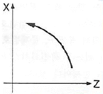
- G18 G02
- G18 G03
- G19 G02
- G19 G03
(정답률: 72%)
9. 밀링머신에서 테이블의 백래시(back lash) 제거장치 설치 위치는?
- 변속기어
- 자동 이송레버
- 테이블 이송나사
- 테이블 이송핸들
(정답률: 76%)
10. 수준기에서 1눈금의 길이를 2mm로 하고, 1눈금이 각도 5“(초)를 나타내는 기포관의 곡률반경은?
- 7.26m
- 8.23m
- 72.6m
- 82.5m
(정답률: 29%)
11. 일반적으로 요구되는 절삭공구의 조건으로 적합하지 않은 것은?
- 강인성
- 고마찰성
- 고온경도
- 내마모성
(정답률: 83%)
12. 밀링머신에서 주축의 회전운동을 왕복운동으로 변환시켜 가공물의 안지름에 키 홈 등을 가공할 때 사용하는 부속장치는?
- 분할대
- 회전 테이블
- 슬로팅 장치
- 래크 절삭장치
(정답률: 75%)
13. 삼침법으로 미터나사의 유효경 측정값이 다음과 같을 때 유효지름은 약 몇 mm인가?
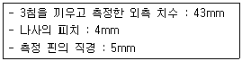
- 18.53
- 19.46
- 24.53
- 31.46
(정답률: 32%)
14. 브로칭 머신에 사용하는 절삭공구 브로치의 피치 간격을 일정하게 하지 않는 이유로 옳은 것은?
- 난삭재 가공
- 칩 처리용이
- 가공시간 단축
- 떨림 발생 방지
(정답률: 65%)
15. 연삭숫돌의 원통도 불량에 대한 주된 원인과 대책이 옳게 짝지어진 것은?
- 연삭숫돌의 눈 메움 : 연삭숫돌의 교체
- 연삭숫돌의 흔들림 : 센터 구멍의 홈 조정
- 연삭숫돌의 입도가 거침 : 굵은 입도의 연삭숫돌 사용
- 테이블 운동의 정도 불량 : 정도 검사, 수리, 미끄럼 면의 윤활을 양호하게 할 것
(정답률: 67%)
16. 보통 선반의 심압대 대신 여러 개의 공구를 방사상으로 설치하여 공정 순서대로 공구를 차례로 사용하여 간단한 부품을 대량생산할 때 사용되는 선반은?
- 공구선반
- 모방선반
- 차륜선반
- 터릿선반
(정답률: 70%)
17. 초경합금을 제작할 때 사용되는 결합제는?
- F
- CI
- Co
- CH4
(정답률: 71%)
18. 래핑가공 중 치수정밀도가 나쁠 때의 대책으로 적절하지 않은 것은?
- 속도를 낮춘다.
- 랩 정반을 점검한다.
- 랩제의 양을 줄인다.
- 입도가 더 큰 랩제를 사용한다.
(정답률: 73%)
19. 다음 그림에서 Y는 약 몇 mm인가? (단, tan60°=1.7321, tan30°=0.5774, 그림의 치수 단위는 mm이다.)
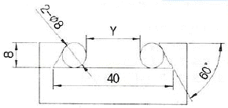
- 20.14
- 15.07
- 29.07
- 18.14
(정답률: 41%)
20. 다음 중 직립 드릴링 머신에서 경사면이나 뾰족한 부분에 드릴링을 할 경우 적절한 방법은?
- 드릴의 이송을 빠르게 하여 드릴링 한다.
- 공작물 아래에 나무판을 대고 드릴링 한다.
- 엔드밀, 센터드릴을 이용하여 드릴링 위치에 자리파기를 하고 드릴링 한다.
- 드릴의 선단각이 180°이상인 플랫 드릴(flat drill)을 이용하여 드릴링 한다.
(정답률: 71%)
2과목: 기계설계 및 기계재료
21. Fe에 C가 고용되어 α–Fe가 될 때 고용체의 형태는?
- 침입형 고용체
- 치환형 고용체
- 고정형 고용체
- 편석 고용체
(정답률: 67%)
22. 다음 중 유리 섬유 강화 플라스틱은?
- CFRP
- MFRP
- GFRP
- FRTP
(정답률: 73%)
23. 전연성이 좋고 색깔도 아름답기 때문에 장식용 금속잡화, 악기 등에 사용되고, 특히 납(Pb)을 첨가한 것은 금색에 매우 가까우므로 박(foil)으로 압연하여 금박의 대용으로 사용되는 것은?
- 95% Cu-5%Sn 합금
- 80% Cu-20%Zn 합금
- 60%Cu-40%Sn 합금
- 50%Cu-50%Zn 합금
(정답률: 71%)
24. 비정질 합금의 일반적인 특징이 아닌 것은?
- 전기저항이 크다.
- 결정이방성이 없다.
- 가공경화를 일으키지 않는다.
- 구조적으로 장거리 규칙성이 있다.
(정답률: 51%)
25. 니켈에 대한 설명으로 틀린 것은?
- 면심입방격자이다.
- 상온에서 강자성체이다.
- 냉간가공 및 열간가공이 불가능하다.
- 내식성이 좋아 대기 중에서 부식이 잘 일어나지 않는다.
(정답률: 62%)
26. 스프링강이 갖추어야 할 특성으로 틀린 것은?
- 탄성한도가 커야 한다.
- 충격 및 피로에 대한 저항성이 커야 한다.
- 마텐자이트 조직으로 구성되어 있어야 한다.
- 사용 중에 영구변형을 일으키지 않아야 한다.
(정답률: 77%)
27. 담금질한 강에 A1 변태점 이하의 열을 가하여 인성을 부여하는 열처리는?
- 뜨임
- 질화법
- 침탄법
- 노멀라이징
(정답률: 66%)
28. 일반적인 플라스틱 재료의 성질과 강의 성질을 비교한 것 중 옳지 않은 것은?
- 강에 비해 가볍다.
- 강에 비해 성형성이 우수하다.
- 강에 비해 인장강도가 매우 크다.
- 강에 비해 열에 대한 저항성이 낮다.
(정답률: 80%)
29. 탄소강에서 탄소 함량의 증가에 따라 증가하는 것은?
- 비중
- 열전도도
- 전기저항
- 열팽창계수
(정답률: 60%)
30. 탄소강에 존재하는 원소 중에서 강도를 증가시키고 고온에서의 소성가공성을 좋게 하며 주조성과 담금질 효과를 향상시키는 원소는?
- Cr
- Mn
- P
- S
(정답률: 54%)
31. 나사 프레스에서 나사는 압축강도가 500N/mm2인 재료로 만들었으며, 여기에 최대 3kN의 압축하중이 작용한다. 안전계수를 9이상으로 할 때 나사 골지름은 약 몇 mm 이상 이어야 하는가?
- 8.3
- 10.4
- 12.8
- 14.5
(정답률: 23%)
32. 공작기계의 주축 등에 사용하며 주로 비틀림을 받는 축으로 형상과 치수가 정밀하고 변형이 적으며 축의 지름에 비해 길이가 짧은 축을 의미하는 것은?
- 스핀들
- 유니버설 조인트
- 전동축
- 플렉시블 축
(정답률: 57%)
33. 밴드 브레이크의 긴장측 장력 7.99kN, 밴드 두께 2mm, 허용인장응력 78.48MPa 일 때, 밴드의 폭은 약 몇 mm 이상이어야 하는가? (단, 이음 효율은 100%로 한다.)
- 43
- 51
- 60
- 71
(정답률: 38%)
34. 147kN의 인장하중을 받는 강판이 양쪽 덮개판 리벳 이음으로 연결되어 있다. 리벳의 지름이 13mm라면 리벳의 수는 몇 개 이상을 사용하면 좋은가? (단, 리벳의 허용전단응력은 50Mpa이고, 양쪽 덮개판 이음에 따른 전단면 개수는 1.8로 한다.)
- 13개
- 11개
- 9개
- 7개
(정답률: 31%)
35. 평벨트와 비교하여 V벨트 전동장치가 가진 특징으로 옳지 않은 것은?
- 접촉 면적이 넓으므로 큰 동력을 전달할 수 있다.
- 미끄럼이 적고 속도비를 크게 할 수 있다.
- 운전이 조용하고 충격 흡수 능력이 크다.
- 바로걸기와 엇걸기를 모두 적용할 수 있다.
(정답률: 67%)
36. 키 홈이나 축의 지름이 급격히 변화하는 부분에서 응력 분포가 불규칙하고 주위의 평균 응력보다 훨씬 큰 응력이 발생하는 것을 무엇이라고 하는가?
- 피로 파괴
- 응력 집중
- 가공 경화
- 크리프
(정답률: 73%)
37. 원통 롤러 베어링 N206이 500rpm으로 1800N의 베어링 하중을 받을 때 이 베어링의 수명은 약 몇 시간인가? (단, 이 베어링의 기본 동적격하중은 14500N, 하중계수는 1.5로 한다.)
- 8422
- 9041
- 9672
- 10422
(정답률: 43%)
38. 기어의 피치원의 지름을 D, 원주피치를 P라면 기어의 잇수(Z)를 구하는 공식은?
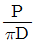
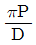
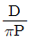
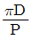
(정답률: 50%)
39. 직사각형 단면의 판을 축방향으로 원추형으로 감아올려 사용하는 것으로 주로 압축용으로 쓰이는 스프링은?
- 링 스프링
- 토션 바
- 벌류트 스프링
- 접시 스프링
(정답률: 56%)
40. 한 변이 50mm인 정사각형 단면의 봉에 3t 질량을 가진 물체에 의하여 중력방향으로 인장하중이 작용할 때 발생하는 인장응력은 약 몇 N/cm2인가?
- 117.7
- 141.4
- 1177
- 1414
(정답률: 36%)
3과목: 컴퓨터응용가공
41. 다음 중 곡률(curvature)에 관한 일반적인 설명으로 틀린 것은?
- 곡률(curvature)의 역수를 곡률 반경(radius of curvature)이라 한다.
- 직선의 곡률반경은 무한대이다.
- 반지름이 a인 원호의 곡률반경은 a이다.
- 평면상에 놓인 곡선에 대한 법선곡률(normal curvature)은 무한대이다.
(정답률: 57%)
42. 솔리드모델링에서 CSG(Constructive Solid Geometry)표현 방식에 대한 설명으로 옳은 것은?
- 데이터 구조가 복잡하다.
- 데이터 관리가 곤란하다.
- 데이터 수정이 곤란하다.
- 체적 및 면적 계산에 처리시간이 오래 걸린다.
(정답률: 56%)
43. CAD 시스템에서 자유곡면을 정의할 때 분할된 단위 곡면 구간 영역은?
- patch
- curve
- element
- primitive
(정답률: 59%)
44. 다음 중 Bezier 곡선의 일반적인 특성으로 옳지 않은 것은?
- Bernstein 다향식을 블렌딩 함수로 사용한다.
- 생성되는 곡선은 시작점과 끝점을 반드시 지난다.
- 블록 껍질(convex hull)내부에서만 곡선이 정의되는 성질을 갖는다.
- 곡선의 양끝 점과 그 점에서의 접선벡터만을 이용하여 곡선을 정의한다.
(정답률: 54%)
45. 서로 다른 CAD/CAM 시스템 사이에서 데이터를 상호 교환하기 위한 데이터 포맷방식이 아닌 것은?
- IGES
- DWG
- STEP
- DXF
(정답률: 63%)
46. CAD 시스템으로 모델링한 물체를 화면에 나타낼 때 실제 볼 수 없는 선과 면만을 나타내어 보는 시점에서의 모호성을 없애는 기법은?(오류 신고가 접수된 문제입니다. 반드시 정답과 해설을 확인하시기 바랍니다.)
- 렌더링
- 뷰포트
- 솔리드 모델
- 은선과 은면 제거
(정답률: 64%)
47. 2차원 상에서 구성되는 원추 곡선을 다음과 같은 일반식으로 표현할 때, b=0, a=c인 경우는 다음 원추 곡선 중 어느 것을 나타내는가?
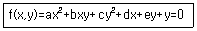
- 원
- 타원
- 쌍곡선
- 포물선
(정답률: 46%)
48. 원통 좌표계에서 표시된 점의 위치가 (r, θ, z)이다. 이 위치를 직교 좌표계로 표현한 것은?
- x=rㆍcosθ, y=rㆍsinθ, z
- x=rㆍsinθ, y=rㆍcosθ, z
- x=rㆍcosθ, y=rㆍsecθ, z
- x=rㆍtanθ, y=rㆍcotθ, z
(정답률: 43%)
49. 3D 솔리드모델링 시스템에서 특징형상 기반 모델링 적용 시 대부분의 시스템에서 지원되는 전형적인 특징형상으로 볼 수 없는 것은?
- 널링(Knurling)
- 포켓(Pocket)
- 필렛(Fillet)
- 모따기(Chamfer)
(정답률: 76%)
50. CAD/CAM의 도입 효과와 가장 거리가 먼 것은?
- 설계 생산성 향상 및 설계 변경 용이
- 회계, 고객관리 업무의 통합적 수행
- 도면 품질 향상
- 제품 개발 기간 단축
(정답률: 81%)
51. CNC 가공의 곡면상에서 옵셋된 공구의 위치를 의미하는 것은?
- CC 포인트
- CL 데이터
- CM 포인트
- 공구 경로 검증
(정답률: 60%)
52. 공작기계의 좌표계에 대한 EIA(Electronic Industries Association)표준에 대한 설명으로 옳지 않은 것은?
- x, y, z는 주된 미끄럼 운동에 대한 축을 나타낸다.
- u, v, w는 부수적인 미끄럼 운동에 대한 축을 나타낸다.
- a, b, c는 x, y, z 방향 축에 대한 회전운동을 나타낸다.
- l, m, n은 u, v, w 방향 축에 대한 회전운동을 나타낸다.
(정답률: 56%)
53. 레스터 그래픽 장치에서 한 화소당 빨강, 초록, 파랑 각각의 색에 8bit plane씩 사용하여 총 24bit plane을 사용할 경우, 한 화면에서 동시에 사용할 수 있는 전체 색의 개수는?
- 24
- 28
- 216
- 224
(정답률: 57%)
54. CAD 시스템에서 3차원 모델링 방법 중 와이어 프레임 모델링 방식의 특징이 아닌 것은?
- 은선 제거가 가능하다.
- 데이터의 구성이 간단하다.
- 모델 작성을 쉽게 할 수 있다.
- 처리속도가 빠르고 메모리 용량이 적게 소요된다.
(정답률: 72%)
55. NC 기계를 이용한 금형 가공에 있어서 초기단계에 많은 절삭영역을 빠른 시간 내에 가공하는 공정단계는?
- 잔삭
- 황삭
- 정삭
- 중삭
(정답률: 83%)
56. 다음 중에서 분말형태의 재료에 레이저를 조사하여 소결하여 적층하는 RP(Rapid Prototyping) 공정은?
- SLA(Stereo Lithographic Apparatus)
- LOM(Laminated-Object Manufacturing)
- SL S(Selective Laser Sintering)
- FDM(Fused Deposition Modeling)
(정답률: 56%)
57. 2차원 평면상에서 물체를 θ만큼 반시계방향으로 회전변환하려고 한다. 이 경우 다음 2차원 변환행렬의 요소 중 c의 값은?
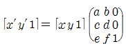
- cosθ
- sinθ
- -sinθ
- -cosθ
(정답률: 47%)
58. 솔리드 모델링의 오일러 작업에 관한 설명 중 틀린 것은?
- 오일러 관계식을 만족한다.
- 오일러 작업 후에는 항상 합당한 형상으로의 변화를 보장한다.
- 토폴로지 요소들은 서로 독립적으로 만들고 없앨 수 있다.
- 토폴로지 요소에는 꼭지점, 모서리, 면, 루프, 셀이 있다.
(정답률: 54%)
59. NC 시스템을 동작제어 측면에서 보면 3가지로 구분할 수 있다. 여기에 포함되지 않는 것은?
- 2차원 윤곽 제어(2D contouring)
- 3차원 곡면 제어(3D sculpturing)
- 4차원 볼륨 제어(4D volume control)
- 2차원 위치 제어(point-to-point control)
(정답률: 75%)
60. CAD 시스템의 형상모데링에서 B-Spline 방정식으로는 완벽하게 표현이 불가능하였지만 NURBS에서는 완벽한 표현이 가능한 것은?
- 원
- 직선
- 삼각형
- 사각형
(정답률: 68%)
4과목: 기계제도 및 CNC공작법
61. 다음 중 헐거운 끼워맞춤에 해당하는 것은?
- H7/k6
- H7/m6
- H7/n6
- H7/g6
(정답률: 72%)
62. 다음 그림에서 차수 “90”이 의미하는 것은?
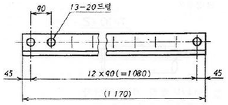
- 구멍의 전체 수량
- 구멍의 피치
- 구멍의 지름
- 구멍의 등급
(정답률: 77%)
63. 핸들이나 바퀴 등의 암 및 리브, 훅, 축, 구조물의 부재 등에 대해 절단한 곳의 전, 후를 끊어서 그 사이에 회전도시 단면도를 그릴 때 단면 외형을 나타내는 선은 어떤 선으로 나타내야 하는가?
- 굵은 실선
- 가는 실선
- 굵은 1점 쇄선
- 가는 2점 쇄선
(정답률: 48%)
64. 다음 기하공차 기호에 대한 설명으로 틀린 것은?
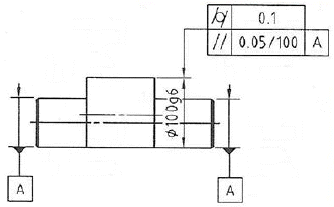
- 기하공차 값 0.1mm는 원통도 기하공차가 적용된다.
- 평행도 기하공차 데이터 A는 양쪽 작은 원통 부위의 공통되는 축 직선을 말한다.
- 지정길이 100mm에 대한 평행도 공차 값은 0.⑤mm 이다.
- 적용하는 형상은 2개의 기하공차 중 한 개만 만족하면 된다.
(정답률: 72%)
65. 그림과 같이 나사 표시가 있을 때, 옳은 설명은?
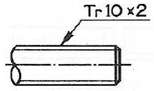
- 불나사 호칭 지름 10인치
- 둥근나사 호칭 지름 10mm
- 미터 사다리꼴 나사 호칭 지름 10mm
- 관용 데이퍼 수나사 호칭 지름 10mm
(정답률: 74%)
66. 화살표 방향을 정면으로 하여 제 3각법으로 투상하였을 때 가장 적합한 것은?
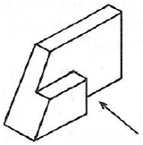
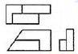
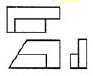
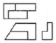
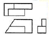
(정답률: 77%)
67. 배관의 간략 도시에 있어서 다음 중 가는 파선으로 나타내는 항목이 아닌 것은?
- 바닥
- 벽
- 도급 계약의 경계
- 구멍(뚫린 구멍)
(정답률: 49%)
68. 가공 방법의 약호에 대한 설명 중 옳지 않은 것은?
- FB : 브러싱
- GH : 호닝가공
- BR : 래핑
- DC : 다이캐스팅
(정답률: 60%)
69. 축을 가공하기 위한 센터구멍의 도시 방법 중 그림과 같은 도시 기호의 의미는?
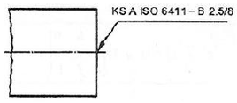
- 센터구멍이 반드시 필요하며 센터구멍의 호칭지름은 2.5mm, 카운터 싱크 구멍지름은 8mm이다.
- 센터구멍은 남아 있어도 좋으며, 센터구멍이 있을 경우 센터 구멍의 호칭지름은 2.5mm, 카운터 싱크 구멍지름은 8mm이다.
- 센터구멍이 반드시 필요하며 카운터 싱크 구멍지름은 2.5mm, 센터구멍의 호칭지름은 8mm이다.
- 센터구멍은 남아 있어도 좋으며, 센터구멍이 있을 경우 카운터 싱크 구멍지름은 2.5mm, 센터구멍의 호칭지름은 8mm이다.
(정답률: 51%)
70. 그림과 같은 등각 투상도에서 화살표 방향을 정면도로 할 때 이에 대한 저면도로 가장 적합한 것은?
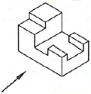
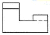
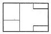
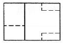
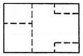
(정답률: 65%)
71. CNC선반에서 G98 기능과 관련된 단위는?
- mm/min
- mm/rev
- deg/min
- rpm
(정답률: 57%)
72. 다음 중 공구의 크레이터 마모와 관련이 있는 부분은?
- 생크
- 인선
- 경사면
- 여유면
(정답률: 60%)
73. CNC선반에서 직경이 ø50mm 부위를 –Z방향으로 절삭하려고 한다. 이때 적합한 주축 회전수 지령은? (단, 재료의 절삭속도 V=120m/min, 이송속도 F=0.2mm/rev이다.)
- G96 S764;
- G96 S1200;
- G97 S764;
- G97 S1200;
(정답률: 45%)
74. 머시닝센터 가공 프로그램에 사용되는 준비기능 가운데 카운터 보링 기능에 해당하는 G코드는?
- G81
- G82
- G83
- G84
(정답률: 49%)
75. CNC 방전전극용 재료의 구비조건으로 틀린 것은?
- 전기 저항값이 낮고 전기 전도도가 클 것
- 융점이 낮아 방전 시 소모가 적을 것
- 방전 가공성이 우수할 것
- 성형이 용이할 것
(정답률: 51%)
76. 서보모터에서 위치 및 속도를 검출하여 피드백(feed back)하지 않는 제어방식은?
- 개방회로 방식
- 폐쇄회로 방식
- 반폐쇄회로 방식
- 복합회로 서보방식
(정답률: 57%)
77. 다음 중 기계안전에 대한 설명으로 옳지 않은 것은?
- 바이트의 자루는 가능한 굵은 것을 사용한다.
- CNC선반 공작물은 무게중심을 맞춰야 안전하다.
- 절삭 중이나 회전 중에는 공작물을 측정하지 않는다.
- 드릴은 Chip의 배출이 어려우므로, 가능한 절삭속도를 빠르게 해야 한다.
(정답률: 77%)
78. CNC준비기능 중 급속 이송(rapid override)과 관련이 없는 것은?
- G00
- G01
- G28
- G30
(정답률: 69%)
79. 날당 이송량이 0.⑤mm/tooth인 2날 엔드밀의 이송속도는 몇 mm/min인가? (단, 회전수 800rpm, 절삭속도 34m/min이다.)
- 34
- 40
- 68
- 80
(정답률: 49%)
80. 다음 CNC기계에 사용되는 좌표계로 가장 거리가 먼 것은?
- 구역 좌표계
- 기계 좌표계
- 보정 좌표계
- 공작물 좌표계
(정답률: 43%)